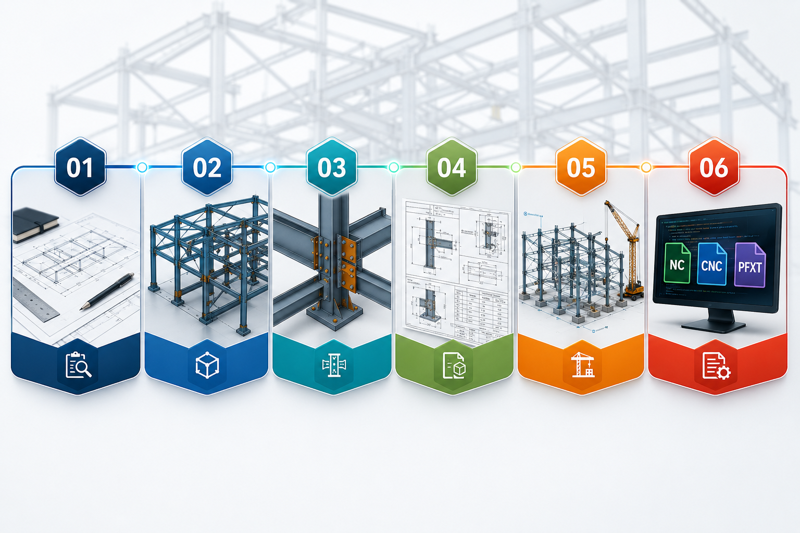

Structural Steel Detailing
At Grid Steel Detailing, we transform structural designs and engineering intent into accurate, fabrication-ready steel detailing documentation. Our detailing process combines engineering understanding, BIM coordination, and fabrication requirements to deliver clear and precise drawings for steel contractors, fabricators, engineers, and construction teams.
From individual steel members and connections to complete structural framing systems, we develop detailed documentation that supports fabrication, material procurement, and efficient field erection.

Accurate Member Sizes
Beams, columns, braces and structural profiles are documented with accurate sizes and identification.
Material Specifications
Material specifications, grades and relevant fabrication information are clearly communicated.
Member Marks
Piece marks and assembly identification help maintain consistency from model to fabrication.
Dimensions & Levels
Dimensions, levels, locations and references are arranged for easy interpretation.
Bolt & Weld Information
Connection information, bolts, welds and fabrication requirements are clearly represented.
Construction Coordination
Documentation is coordinated with structural and architectural requirements wherever applicable.
Every detail should be clear, coordinated and ready.
Steel BIM Modeling
We create detailed 3D BIM models that provide a coordinated digital representation of the complete steel structure.
Our BIM modeling process helps identify clashes, verify member positioning, coordinate connections, and improve communication between design, fabrication, and construction teams.

Structural Framing
Complete structural framing is developed into a coordinated three-dimensional steel model.
Primary & Secondary Steel
Beams, columns, braces and secondary steel are modeled with relevant member information.
Connections & Assemblies
Connections and assemblies are developed as part of the coordinated structural model.
Miscellaneous Steel
Stairs, platforms, ladders and miscellaneous steel can be incorporated into the model.
Model Coordination
Model-based coordination helps improve communication between design and construction teams.
Clash Identification
Potential clashes and positioning issues can be identified before fabrication and erection.
Anchor Bolt & Base Plate Details
Accurate foundation-to-steel connections are critical for proper structural installation. We prepare detailed anchor bolt and base plate documentation to clearly communicate the location, dimensions, orientation and connection requirements between the foundation and structural steel.

Base Plate Dimensions
Plate dimensions, thickness and relevant material information are clearly detailed.
Anchor Bolt Locations
Bolt locations and patterns are communicated for accurate foundation interface coordination.
Bolt Diameter & Grade
Required bolt sizes, grades and associated information are presented clearly.
Hole Sizes & Patterns
Hole dimensions and patterns are incorporated into the connection documentation.
Column Orientation
Column orientation, offsets and positioning references help support correct erection.
Foundation Interface
Elevations, offsets and applicable grouting requirements are documented for coordination.
Connection Detailing
Connections are one of the most important parts of structural steel detailing. We develop clear and practical connection details based on the provided engineering design and project requirements.
Our connection detailing communicates how individual steel members are assembled and connected at fabrication and erection stages.
Bolted Connections
Bolts, plates, dimensions and relevant references are clearly represented for fabrication and assembly.
Welded Connections
Welding requirements and applicable connection information are presented in fabrication-ready documentation.
Beam-to-Column
Beam-to-column connection details communicate member interfaces and required fabrication information.
Beam-to-Beam
Practical connection documentation supports accurate fabrication and field assembly.
Gusset & Bracing
Bracing connections, gusset plates and related components are documented with required references.
Stiffeners & Plates
Stiffeners, splice plates, end plates and connection plates are developed with dimensional information.
Designed to communicate the complete connection.
Steel Shop Drawings
Our steel shop drawings convert approved structural information into clear fabrication documentation. Shop drawings provide fabricators with the information required to manufacture individual members and assemblies accurately.

Part Drawings
Individual steel members and parts are documented with the information required for fabrication.
Assembly Drawings
Assemblies are presented with clear member relationships, references and identification.
Piece Marks
Piece marks provide consistent identification between drawings, model and fabrication.
Material Information
Plate, profile and material specifications are organized for clear fabrication interpretation.
Bolt & Hole Details
Bolt locations, hole sizes and related connection information are included where applicable.
Weld Symbols
Weld information is represented clearly to support fabrication and assembly requirements.
Erection / General Arrangement
Erection and General Arrangement drawings provide the field team with a clear understanding of how fabricated steel components are positioned and assembled on site.
Our GA drawings communicate the overall structural arrangement through plans, elevations, sections and detailed references.

Floor Plans
Floor plans communicate member positioning and structural arrangement across project levels.
Roof Plans
Roof framing and relevant structural references are presented clearly for erection coordination.
Elevations
Elevations provide clear vertical positioning and member arrangement references.
Sections
Sections provide additional information where plans and elevations require further clarification.
Grid Lines & Levels
Grid lines, levels, dimensions and member marks support accurate field positioning.
Erection References
Connection references and assembly identification help field teams understand where components belong.
NC / CNC & PFXT Files
To support fabrication workflows, we can prepare machine-readable fabrication files generated from coordinated steel detailing data.
These files help transfer accurate member and plate information from the detailing environment to fabrication machinery and production systems.

NC Files
Machine-readable NC information can support automated fabrication workflows.
CNC Machine Data
CNC-oriented information helps transfer coordinated model data toward production systems.
PFXT Files
PFXT fabrication information can be prepared as required by the project workflow.
Plate Information
Plate information supports accurate cutting and production requirements.
Hole & Drilling Data
Hole locations and drilling information can be transferred into fabrication workflows.
Machine References
Machine-readable fabrication references help maintain consistency between model and production.
Connecting detailing information with fabrication requirements.
From Model to Fabrication
Our workflow connects every stage of structural steel documentation. Each stage builds on the previous one, helping maintain continuity between engineering, modeling, fabrication and erection.

Design Understanding
We review available structural drawings, specifications, architectural information and project requirements.
3D Steel Modeling
Structural members, assemblies and connections are developed into a coordinated BIM model.
Connection & Detail Development
Connections, base plates, anchor bolts and other critical details are developed and coordinated.
Shop Drawing Production
Detailed fabrication and assembly drawings are generated from the coordinated model.
Erection Documentation
GA and erection drawings provide clear information for installation of fabricated steel on site.
Fabrication Data
Required NC/CNC and other machine-readable files are prepared to support the fabrication process.
Built for Accuracy. Coordinated for Construction.
At Grid Steel Detailing, we believe good steel detailing is more than producing drawings. It is about creating a reliable connection between engineering, fabrication, and construction.
Our documentation is developed with a focus on accuracy, coordination, clarity and practical fabrication requirements — helping project teams move confidently from structural design to completed steelwork.

Accuracy
Detailed information is developed with attention to member, connection and fabrication requirements.
Coordination
Models and documentation are organized to support coordination between project disciplines.
Clarity
Information is structured so fabricators and erection teams can interpret drawings efficiently.
Fabrication Focus
Documentation considers practical fabrication and production requirements.
Erection Support
GA and erection information helps field teams understand positioning and assembly.
Reliable Documentation
The objective is a dependable documentation chain from engineering intent to completed steelwork.